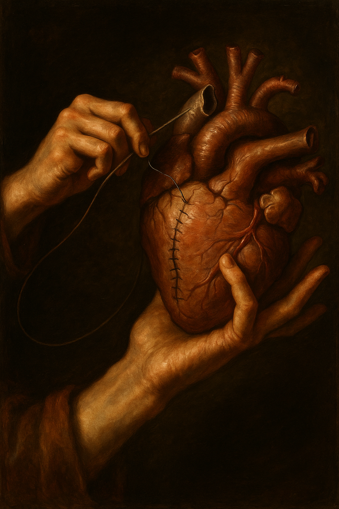
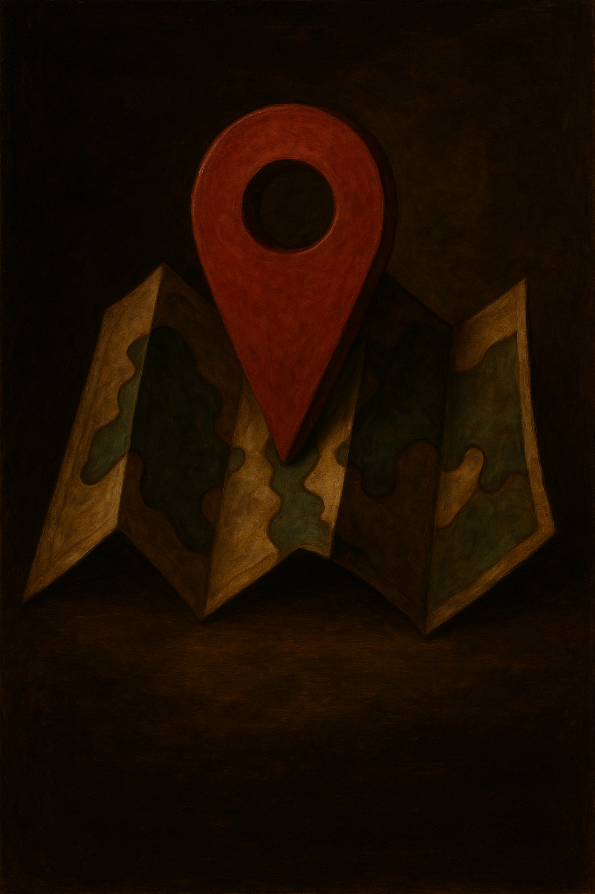
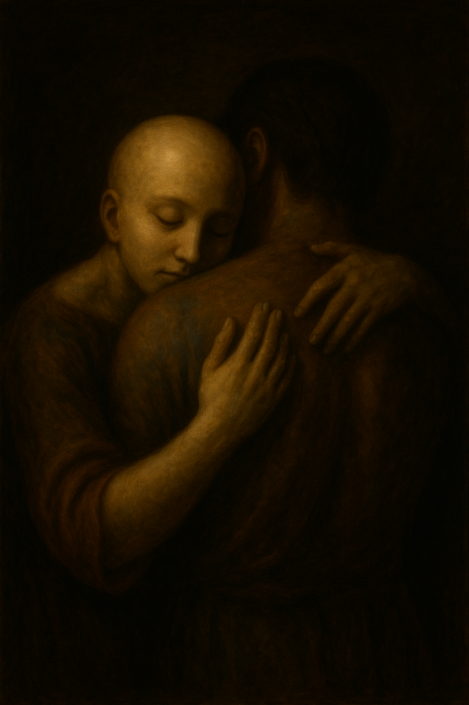

HESED: Amor fiel en medio del caos
Una comunidad para los que buscan contención, fe y esperanza.
Acceder al chat¿Qué es HESED?
חֶסֶד (Hesed) es el amor fiel, la gracia activa y la misericordia inquebrantable de Dios. Un espacio de apoyo emocional y espiritual para quienes lo necesiten.
Recursos Destacados

Guía de primeros auxilios emocionales
Herramientas prácticas para calmar la ansiedad y el estrés.

Listado de psicologos gratuitos en tu zona
Podes encontrar ayuda psicológica en tu zona no esta solo/a
Chat en Vivo
¿Querés hablar con alguien? Estamos acá para vos.

Blog y Reflexiones
Cuando no podés más…
Leer más →Dios en el silencio
Leer más →Ansiedad y fe: un puente real
Leer más →Sumate a HESED
¿Querés ayudar a otros o apoyar este espacio?
Voluntariado
Formá parte del equipo de contención y acompañamiento.
Donaciones
Aportá para sostener este proyecto y sus recursos gratuitos.